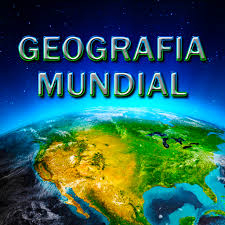

GeoGuessr é um jogo de geografia para navegadores web no qual os jogadores são deixados em algum lugar do mundo
através de imagens capturadas pelo Google Street View e possuem a missão de encontrar pistas para adivinhar sua localização no mapa.
Seterra
Seterra é um programa de geografia, com 70 exercicios diferentes no qual o usuário aprender sobre países, capitais,
bandeiras e cidades de todo o mundo. Exemplos de exercícios: localizar cidades ou países de um determinado continente,
localizar acidentes do relevo, aprender as bandeiras nacionais de países e cidades.
Geografia: aprenda jogando
Este aplicativo de aprendizado ajudará você a aprender tudo sobre a geografia do mundo: países, capitais, bandeiras, população, religião,
idiomas, moedas e muito mais.
Geografia mundial

Geografia Mundial é um jogo de perguntas que irão ajudá-lo a aprender tudo sobre países:
mapas, bandeiras, capitais, população, religiões, idiomas, moedas e muito mais.